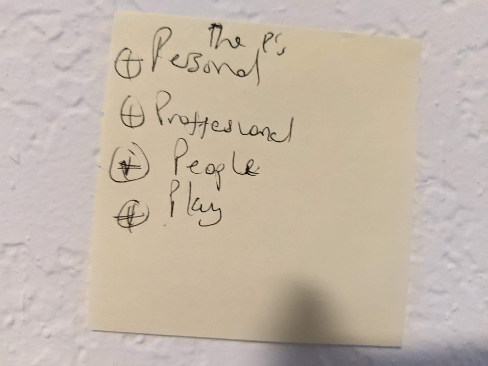
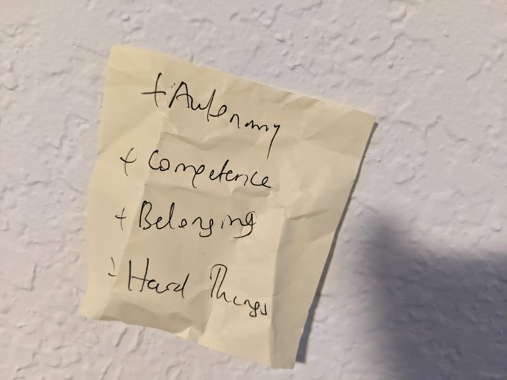

There comes a time in a one’s life when existential questions grow too loud to ignore. One that has been on my mind lately is fulfillment. It has been haunting me to the extent I thought online retailers were after me, throwing the word around like confetti; ‘Your order is fulfilled’, ‘[X] fulfillment center’, ‘fulfill this’, ‘fulfill that’. Sure, getting my package feels good but is it fulfilling? I don’t think so.
By definition, the prerequisite to fulfillment is a gap between what you have and what you want. So, in theory, fulfillment can be achieved in 2 easy steps. Step one; figure out what you need, step two: satisfy those needs. If it were that easy in practise, we wouldn’t be talking about it, let alone spending the one lifetime we have pursuing it. The reality is achieving fulfillment is tricky for various reasons:
-
The first step is not easy as it sounds. It takes consious effort to figure out your path. There is a myriad of paths to be explored and significant introspection to be done, all of which take time and space. Many of us take the default path because its easy. We either have time or space but never both. When people take unconventional paths like running world mountains or travelling to all countries, we have no choice but to envy them.
-
Even after figuring out the exhaustive list of paths to fulfillment, the second step is not always feasible. For instance, I know for sure that writing fulfills me and I wouldn’t miss a thing if it was all I did, but I also have bills to pay. I love challenging myself with ridiculously long runs but ruts and flares keep me grounded. We can’t always get what we want.
-
There is always more; that’s the premise of living. Everytime we interact with the world, the list of things we want keeps growing and evolving. Even in the rare instance you check all the boxes, boredom brings us right back to square one. Fulfillment is a fleeting feeling.
Fulfillment is ultimately unattainable on the grand scale but we can definitely catch glimpses of it at the micro scale. It’s in the memorable moments like finishing a very tough race, making a new friend or solving an impossible puzzle. I have a habit of keeping stock of these moments as they happen or when I read about them; I note them in old-fashioned sticky notes. While doing this years’ round of spring cleaning, I finally saw the pattern.


I was onto something and I’m not alone.
-
While deciphering self-improvement, Scott Young wrote a post listing autonomy, competence and relatedness as the most essential needs. He went on to suggest mastery, creative vision, service as being crucial for fulfillment.
-
In Do hard Things Steve Magness concludes Autonomy, Competence and Belonging are essential elements to sustainable excellence.
-
In Made to stick, Chip and Dan Heath describe three types of plots in stories that stick: Challenge, Connection and creativity plots.
-
According to Victor Frankl, the author of Man’s search for meaning, meaning can be found in good work, love for one another and courage to endure suffering.
-
Maslow’s hierarchy of needs places love and belonging, esteem and self actualization up at the pinnacle.
-
Last year, I wrote about a good day that was marked by challenge, connection and awe.
I call it fulfillment, some call it meaning, others call it contentment; different words, same concept. All its recipes converge to the same three ingredients: achievement, connection and self-expression. They co-exist in a complementary ecosystem that has to be correctly aligned. While some of us find fulfillment in endurance, some find it in bringing harmony to the village and others get it by striking a balance of all three. We need all three in varying proportions.
Fulfillment is a good thing, we know that already. Fulfilled people are happy, resilient and generally pleasant to be around, the world would be a much better place if we had more of those. We are not there yet because such is life, it is messy, noisy and not always setup in our favor. I challenge you to seek fulfillment anyway, the how matters less than the intention. There are only so many hours in a day, so many years in a lifetime, it pays to be intentional about how we spend them. If you were looking for a sign, here it is: Go forth, and be fulfilled!